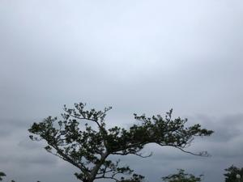
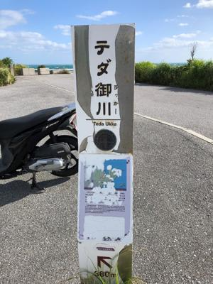
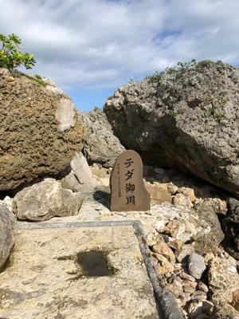
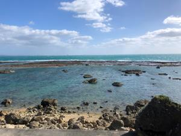

うるがいの話 ある日
最新: ラクフィット【うるがいの話 ある日】とは 一日だけのプログです
『うるがいの話』の最新一日だけのプログで、通信料が少なく経済的だ。カニの画像をクリックすると全ての日付が載る『うるがいの話』サイトを表示します
|
|
【うるがいの話】 うるがい(ｳﾙｶﾞｲ urugai)とは、『もずくがに』の名前でとても大きくなります。 |
|---|---|
|
|
【カミマヤーの話】 猫のことを方言でマヤーといいます。カミマヤー（kamimayaa）とは、神の猫のことです。 |
|
【たながぁの音楽】 たながぁ（ﾀﾅｶﾞｰ tanagaa）とは手長えびのことで、何種類かあり大きいのは車 エビぐらいになります。 |

|
【ぶながぁの話】 ぶながぁ(ﾌﾞﾅｶﾞｰ bunagaa)とは、赤い髪の毛、赤い身体、そして身長は１ｍ２０ｃｍ ぐらい、川の蟹を食べているの目撃された。場所は沖縄県国頭郡大宜味村のと ある村僕の隣近所に住んでいる爺さんから、聞いた話です。 |
|
|
【ギーマの話】 ギーマ(giima)とは、山原の里山に咲くスズランに似た、 花を付けます。実は食べられます、 気が付くと口の周りが紫になっています。 |
2022年10月20日 (木）ラクフィット
15:47
   
「ポッコリしたおなかをなんとかしたい．．．」そんな方々のために、サント
リーが“ポッコリおなか”を科学し、研究を重ねて生まれた機能性表示食品が
『ラクフィット』です。
一か月試してみたが、効果を感じられず。値段が高いので継続を止める、薬を
飲んで良くなるわけがない。ホホホ、お腹の筋力を取り戻すことにする。はる
か前にも、大正製薬の『おなかの脂肪が気になる方のタブレット（粒タイプ）
』も試したが、その時は会計検査対応で、ストレスが重なり軽るく２キロ以上
も体重を落としたため（お腹もへっこんだ）、効果が分からず継続を止めた経
験があったが。
明日から、天気が悪くなる予報なので介護の合間をぬって、霊地１４箇所の６
番目テダ御川(うっかー)へバイクで行く。天気は良かったが風が強く、浜辺の
せいか案内版が、ボロボロになっていた。７番地は斎場御嶽（せーふぁーうた
き）、歩いていくことも考えたが御嶽まで５百メートルと表示されていたので
横めで入口を眺めながら通り過ぎる。
１５時４１分 ビットコインの総資産 ￥８、２９８↑